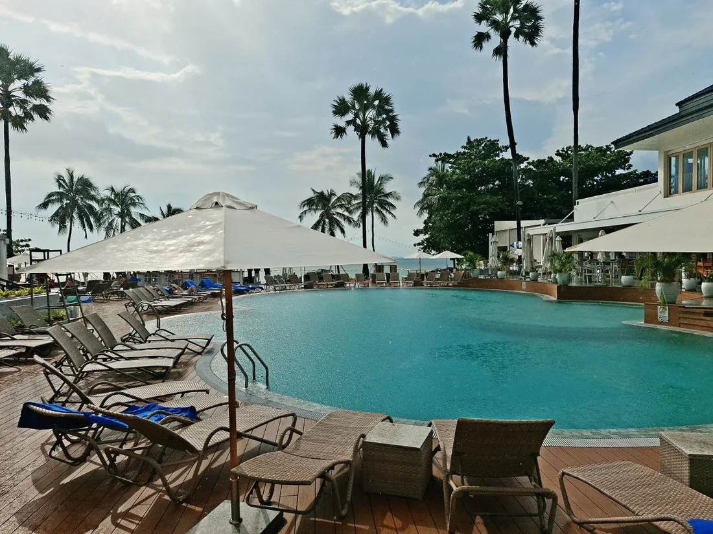

Where to Stay in North Pattaya: Which Part of the Bay Suits You
North Pattaya is three places to sleep, not one: the beach side on the Wong Amat headland, where the resorts stand on the sand; the Beach Road side, where the top of Pattaya Beach begins and the hotels sit behind a pavement and a songthaew route; and the bus-station side on North Pattaya Road, which is where you stay when the coach matters more than the sea. The first has no road behind the sand, the second has the town behind it, and the third is 3.2–3.5 km from the water.
The three parts of the bay
| Part of the bay | What is there | What it suits | To the sand |
|---|---|---|---|
| Beach side — Wong Amat | Resort frontage along the whole headland, condominium towers behind, and no road along the sand. | Swimmers, and anyone who wants the hotel's terrace, pool and restaurant to be the evening. | Down a lane off Naklua Road — Soi 16 and Soi 18 are the established approaches |
| Beach Road side | The northern end of Pattaya Beach, starting at the Dusit Thani cape: a crescent about 3 km long with Beach Road behind it for its whole length, Terminal 21 at the north, and hotels on and behind the road. | Anyone who wants a pavement, a songthaew route, shops and restaurants at the hotel gate. | Across Beach Road |
| Bus-station side | North Pattaya Road, from the Dolphin Roundabout east to Sukhumvit Road and the coach terminal, with the roundabout hotel cluster at the west end. | One-night stops, early departures, and anyone who wants arrival to cost minutes. | 3.2–3.5 km to Wong Amat; 1.8–4.2 km to the roundabout — a ride, not a walk |
What “North Pattaya” means on a booking page
It is a convention, not a district. Pattaya City names only the two ends of Pattaya Beach — the Dusit Resort junction in the north and Pattaya Hill in the south — and draws no line between north, central and south. So a property sold as “North Pattaya” can be on the Wong Amat headland, behind Beach Road at the Dolphin Roundabout, or out on North Pattaya Road beside the coach terminal, and those are three different mornings. Before you book, put the property's pin against the Dolphin Roundabout and the beach: a soi number off Naklua Road means the sand; an address on North Pattaya Road means a ride to it.
The beach side: Wong Amat
Wong Amat is 1.3–1.5 km of west-facing sand, and its frontage is resort from end to end: Long Beach Garden Hotel & Spa, Garden Cliff Resort & Spa and Pullman Pattaya Hotel G at the northern end off Soi Naklua 16, Centara Grand Mirage Beach Resort along the middle, and Cape Dara Resort nearest the Dusit cape at the southern end, with condominium towers behind them. The sand is public — the resorts own the frontage, not the beach — and you reach the water down a lane.
That geography decides the stay. With no road along the back of the sand there is no beachfront strip of bars and shops, no through traffic and no car park at the beach; the evening is the hotel, and the lanes are for walking back up to Naklua Road. In our reading it is the quietest of the three parts, and it is what the frontage is being paid for. The beachfront at Wong Amat covers the sand, the lanes and the water.

The Beach Road side
Pattaya Beach begins at the cape where Wong Amat ends, and Dusit Thani Pattaya stands on that junction. From there the sand runs south as a half-moon crescent about 3 km long, with Beach Road behind it for the whole length — one-way — and the dense part of the town behind the road: hotels, shops, restaurants, bars and cabarets. Terminal 21 sits immediately behind the northern end at the Dolphin Roundabout, and Woodlands Hotel & Resort is set back on the Pattaya–Naklua road side.
Rooms here buy convenience rather than quiet. You get a pavement, the songthaew loop, shops and restaurants at the door, and the beach across the road. In our reading the northern stretch is quieter and more hotel-oriented than central Pattaya, and Walking Street is 3.6–4.4 km south, 7–9 minutes by road. The North Pattaya stretch covers the sand and what backs onto it.
The bus-station side
Pattaya North Bus Terminal is on North Pattaya Road near Sukhumvit Road, east of the Dolphin Roundabout, and it is where the coaches from Bangkok and from Suvarnabhumi airport set down. The hotel cluster to look at from here is around the roundabout: Grande Centre Point Pattaya behind the roundabout end and Sunshine Garden Resort on the North Pattaya Circle side, both a short walk from the roundabout itself — which is 1.8–4.2 km from the terminal mouth, depending on the direction you approach from.
A night here is a practical one. You are on the road that leaves the roundabout east for Sukhumvit and the terminal, so arrival and departure cost minutes instead of a ride with bags, and the northern end of Pattaya Beach is a 5-minute walk from the roundabout. How far the bus station is — and what the ride to the water costs — is set out on the terminal's own page.
The nine properties, and where each one stands
Each of the nine hotels below sells rooms on its own site, and each sits in one of the three parts above; the list is current as of 18 November 2026. Room rates are set property by property and move with the date, so the rate that matters is the one your own dates return — and the property is the only place that can tell you which rooms face the water.
| Property | Where it stands | Own site |
|---|---|---|
| Long Beach Garden Hotel & Spa | Wong Amat frontage, northern end, Soi Naklua 16 | longbeachgardenhotel.com |
| Garden Cliff Resort & Spa | Wong Amat frontage, northern end, Soi Naklua 16 | gardencliffpattaya.com |
| Pullman Pattaya Hotel G | Wong Amat frontage, Soi 16 | pullmanpattayahotelg.com |
| Centara Grand Mirage Beach Resort Pattaya | Wong Amat frontage, middle of the beach | centarahotelsresorts.com |
| Cape Dara Resort | Wong Amat frontage, southern end by the Dusit cape | capedarapattaya.com |
| Dusit Thani Pattaya | The cape where Wong Amat ends and Pattaya Beach begins | dusit.com |
| Woodlands Hotel & Resort | Behind Beach Road, on the Pattaya–Naklua road side | woodlandspattaya.com |
| Grande Centre Point Pattaya | Behind the Dolphin Roundabout, North Pattaya Road | grandecentrepointpattaya.com |
| Sunshine Garden Resort | North Pattaya Circle, by the Dolphin Roundabout | sunshinegardenresort.com |
Getting between the parts
Shared songthaews — the baht buses that run fixed routes with no timetable — cost 15–20 THB a trip, distance-dependent, since the fare rose on 10 April 2026. They run north along Naklua Road past the Dolphin Roundabout, and round the Beach Road and Second Road loop behind Pattaya Beach. None of them runs along the sand at Wong Amat: you ride the road and walk down a lane.
| Leg | Road distance | Drive time |
|---|---|---|
| Bus terminal → Dolphin Roundabout | 1.8–4.2 km, direction-dependent | 2–5 minutes |
| Bus terminal → Wong Amat, Centara frontage | 3.2–3.5 km | 5–6 minutes |
| Bus terminal → Lan Pho Market, Naklua | 3.4–3.6 km | 4–5 minutes |
| Dolphin Roundabout → Wong Amat frontage | about 3 km | — |
| Wong Amat → Lan Pho Market | 3.1–3.3 km | 6 minutes |
| Wong Amat → Walking Street | 5.4–5.8 km | 10–12 minutes |
If you would rather sleep beside a working market than a beach, the top of the bay is Naklua, and rooms in Naklua trade the frontage for the market, the pier and the seafood cooked to order. North Pattaya puts that quarter beside the two beaches and the terminal on the same short shore.